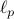

Mahdi Haghifam
 |
Research Assistant Professor, |
About Me
I am a research assistant professor at the Toyota Technological Institute at Chicago (TTIC). I was previously a Distinguished Postdoctoral Researcher at Khoury College of Computer Sciences at Northeastern University, fortunate to be working Jonathan Ullman and Adam Smith. I completed my PhD at University of Toronto and Vector Institute where I was fortunate to be advised by Daniel M. Roy. I also received my B.Sc. and M.Sc. degrees in Electrical Engineering from Sharif University of Technology.
During Summer and Fall 2022, I was a research intern at Google Brain (Differential Privacy Team) where I was lucky to be mentored by Thomas Steinke and Abhradeep Guha Thakurta. I was also a research intern at Element AI (ServiceNow Research Lab) in Winter 2019 and Fall 2020 where I had the opportunity to work with Gintare Karolina Dziugaite in the Trustworthy AI Research Program.
Recognitions of my work include a Best Paper Award at ICML 2024, Simons Institute-UC Berkeley Research Fellowship, as well as several honors for graduate research excellence from University of Toronto, including the Henderson and Bassett Research Fellowship and the Viola Carless Smith Research Fellowship. Additionally, I was recognized as a top reviewer at NeurIPS in 2021 and 2023.
Outside my research activities, I enjoy playing and watching soccer, reading classic literature, and baking.
Research Overview and Selected Papers
My research focuses on the foundations and principled algorithm design for ML. More broadly, I am interested in statistical learning theory, statistics, and information theory. The central goal of my research is to address practical challenges in ML by developing tools and algorithms with rigorous theoretical guarantees that assess and ensure validity. This work is crucial for building trustworthy ML systems in high-stakes applications, where balancing responsible deployment with strong empirical performance is essential. Some of the questions I have been thinking about: When and how can models generalize beyond their training data? Under what conditions do they memorize sensitive information? And how can we preserve privacy while still learning effectively from sensitive data?
Generalization in Machine Learning:
Information-Theoretic Generalization Bounds for SGLD via Data-Dependent Estimates
J. Negrea*, M. Haghifam* , G. K. Dziugaite, A. Khisti, D. M. Roy
Advances in Neural Information Processing Systems (NeurIPS), 2019
[Talk video]Towards a Unified Information–Theoretic Framework for Generalization
M. Haghifam , G. K. Dziugaite, S. Moran, D. M. Roy.
Advances in Neural Information Processing Systems (NeurIPS), 2021 (Spotlight, <3% of submissions)
Memorization and Privacy Attacks:
Information Complexity of Stochastic Convex Optimization: Applications to Generalization and Memorization
I. Attias, G. K. Dziugaite, M. Haghifam , R. Livni, D. M. Roy (alphabetic ordering)
International Conference on Machine Learning (ICML), 2024 (Oral, Best Paper Award: Top 10 of 10,000 submissions)The Sample Complexity of Membership Inference and Privacy Auditing
M. Haghifam , A. Smith, J. Ullman
Pre-print, 2025On Traceability in  Stochastic Convex Optimization
S. Voitovych*, M. Haghifam* , I. Attias, G. K. Dziugaite, R. Livni, D. M. Roy
Advances in Neural Information Processing Systems (NeurIPS), 2025 (Spotlight, <3% of submissions)
Differential Privacy:
Private Geometric Median
M. Haghifam , T. Steinke, J. Ullman
Advances in Neural Information Processing Systems (NeurIPS), 2024Faster Differentially Private Convex Optimization via Second-Order Methods
A. Ganesh, M. Haghifam , T. Steinke, A. Thakurta (alphabetic ordering)
Advances in Neural Information Processing Systems (NeurIPS) 2023
Contact Me!
Feel free to reach out if you'd like to discuss research ideas. Also, I'm happy to offer guidance and support to those applying to graduate programs, especially individuals who might not typically have access to such assistance